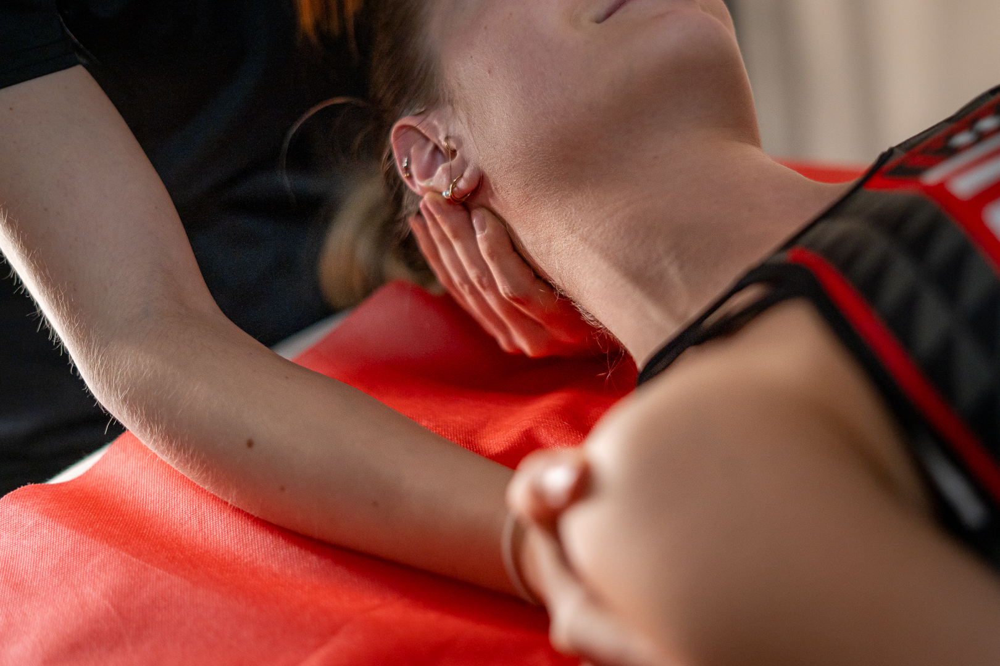

Manuálterápia
A manuálterápia olyan kezelési módszer, amely során a terapeuta kézzel
végzett technikákat alkalmaz az izmok, ízületek és lágy szövetek
kezelésére. Ez a terápiás módszer számos különböző technikát foglal
magában, mint például a masszázst, a mobilizációt és a manipulációt,
és széles körben alkalmazzák az egészségügyi problémák kezelésére és a
funkció javítására.
Mire jó?
-
Fájdalomcsillapítás: A manuálterápia segíthet enyhíteni az izom-
és ízületi fájdalmat, valamint a gyulladást.
-
Mozgásterjedelem javítása: Speciális technikák segíthetnek
növelni az ízületek mozgásterjedelmét, ami fontos a fiziológiás
mozgáshoz és funkcióhoz.
-
Izomerősítés: Bizonyos manuálterápiás módszerek segíthetnek
erősíteni az izmokat és javítani az izomtónust.

Mikor ajánlott?
-
Izom- és ízületi fájdalom esetén: Ha tapasztalsz krónikus vagy
akut fájdalmat az izmokban vagy ízületekben.
-
Korlátozott mozgékonyság esetén: Ha nehezen mozogsz vagy érzed
merevnek az ízületeidet.
-
Sérülések utáni rehabilitáció: A manuálterápia hatékony lehet a
sérülések utáni rehabilitációban a mozgásfunkció
visszaállításához.
Mikor nem ajánlott?
-
Súlyos állapotok esetén: Ha az állapot súlyos, például törés
vagy súlyos szöveti sérülés esetén, először orvoshoz kell
fordulni a megfelelő kezelésért.
-
Bizonyos egészségügyi problémák esetén: Bizonyos állapotok,
például daganatok vagy fertőzések esetén elővigyázatosságból
vagy az orvos utasítására kerülhet sor a manuálterápiás
kezelésre.
- Várandósság ideje alatt
-
A manuálterápia hatékony módszer lehet az izmok, ízületek és
lágy szövetek kezelésére és javítására, de fontos szakemberrel
konzultálni a megfelelő kezelési tervről és a technikák
alkalmazásáról.